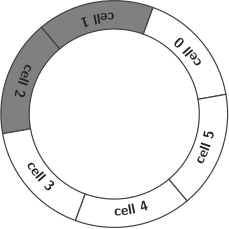

Figure 1: : Timelines of two InterCom interactions. On the left, the playback
is defective because some chunks are lost. On the right, the audio rendering is
correct because the playback has been delayed 2 chunk times (enough for this
example).
The QoE provided by InterCom is inversely proportional to the network jitter (see Fig. 1-a). One solution to this drawback (Fig. 1-b) is the use of a random access buffer at the receiver side, where the chunks are stored for a time large enough to hidden the jitter to the user [1].
Dejitterizing buffers are typically implemented with a circular buffer structure (see the Fig. 2). In an ideal situation (as the depicted in the figure), the number of pending-to-be-played chunks available in the buffer is half of the number of cells in the buffer, and the chunks have arrived on time. In this example, the receiver (where the chunks are buffered) waits for 3 chunks before to start playing the chunk number 0.1 Notice that the number of cells in the buffer must be the double of the number of the chunks buffered during the buffering time , in order to hide a chunk-time jitter. Notice also that this technique introduces also a chunk-time delay in the playback.
 |  |  |
| (a) | (b) | (c) |
For this new improved InterCom a parameter with the buffering time must be provided by the users. This value (typically expressed in miliseconds) should be large enough to hide the network jitter, but small enough to minimize the end-to-end (user) latency.
Use the following basic guidelines to implement the buffered version of InterCom:
Please, finish this milestone in two weeks.
A python module called buffer.py stored in the root directory of the intercom’s repo.
[1] James F. Kurose and Keith W. Ross. Computer Networking: A Top-Down Approach Featuring the Internet. Pearson, 2013.